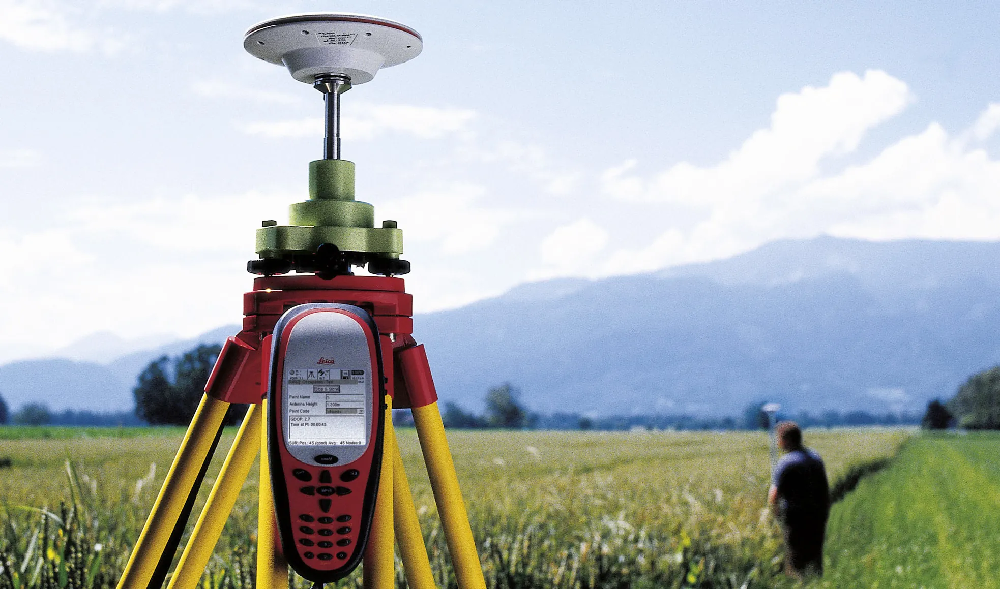

Gotowe projekty domów
Sprzedajemy gotowe projekty domów jednorodzinnych, letniskowych, gospodarczych, garażowych i usługowych.
Otwórz katalog projektów
Usługi Geodezyjno-Kartograficzne SIGMA s.c. - Lębork
Podziały i rozgraniczenia działek, wznowienia granic, mapy do celów projektowych i geodezyjna obsługa budowy. Pracujemy w powiatach lęborskim, słupskim, bytowskim, wejherowskim i puckim.
Zapytaj o pomiarul. Armii Krajowej 55/1, 84-300 Lębork
Pomiary wykonujemy w formie analogowej i cyfrowej, mapy w systemie tradycyjnym i cyfrowym. Każdą sprawę prowadzi geodeta z uprawnieniami.
Podział nieruchomości na mniejsze działki oraz ustalenie przebiegu granicy, gdy jest niejasna albo sporna.
Odszukanie i ponowne oznaczenie w terenie punktów granicznych działki.
Aktualna mapa terenu, na której architekt przygotuje projekt domu, budynku albo sieci. W systemie tradycyjnym i cyfrowym.
Przeniesienie projektu budynku lub sieci uzbrojenia podziemnego na grunt przed rozpoczęciem prac.
Pomiar wybudowanego budynku i sieci uzbrojenia podziemnego po zakończeniu robót.
Wytyczenia i pomiary kontrolne na kolejnych etapach inwestycji.
Pomiar terenu i obiektów wraz z wysokościami, w formie analogowej i cyfrowej.
Wydruki map i projektów w formatach od A3 do A0.
Trzon firmy stanowi zespół geodetów z uprawnieniami z zakresu 1 i 2. Od początku działalności wykonaliśmy ponad 4250 prac: podziały i rozgraniczenia, wznowienia granic, wytyczenia i inwentaryzacje budynków oraz sieci, pomiary sytuacyjno-wysokościowe i mapy do celów projektowych.
Oprócz pomiarów pomożemy w kilku sprawach, które pojawiają się przy budowie.
Sprzedajemy gotowe projekty domów jednorodzinnych, letniskowych, gospodarczych, garażowych i usługowych.
Otwórz katalog projektówDrukujemy mapy i projekty w formatach od A3 do A0, na miejscu w biurze w Lęborku.
Zapytaj o wydrukPolecamy Usługi Transportowo-Sprzętowe Przemysław Babij: koparko-ładowarki 4CX, wywrotki, koparki i ładowarki, powiat lęborski i okolice.
tel. 501 467 606Usługi Geodezyjno-Kartograficzne SIGMA s.c.
ul. Armii Krajowej 55/1 (obok zakładu EUROFOTO)
84-300 Lębork, woj. pomorskie
NIP 841-13-67-717 - REGON 770861444 - Facebook